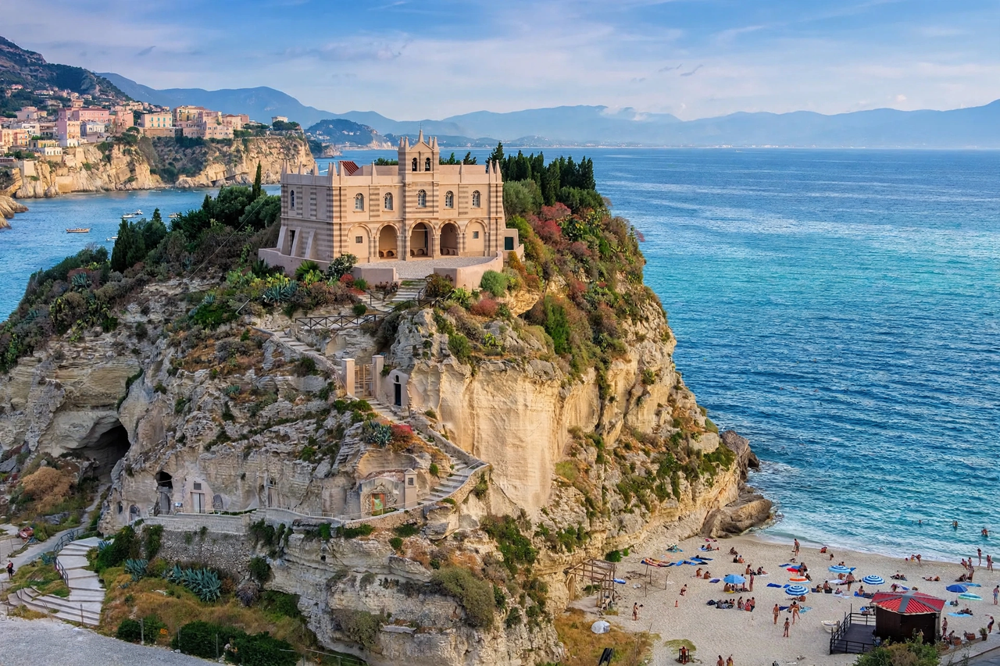

| Calabria | |
| Country | Italy |
|---|---|
| Capital | Catanzaro (regional government seat; largest city: Reggio Calabria) |
| Provinces | Catanzaro, Cosenza, Crotone, Reggio Calabria, Vibo Valentia |
| Area | About 15,080 km² |
| Population | About 1.8–1.9 million |
| Highest point | Serra Dolcedorme (Pollino massif), 2,267 m |

Calabria is a region in Southern Italy, forming the "toe" of the Italian Peninsula. It is bordered by Basilicata to the north and separated from Sicily by the Strait of Messina to the southwest. The region has coastlines on both the Tyrrhenian and Ionian Seas, a mountainous interior (the Pollino, Sila, and Aspromonte massifs), and one of Italy's lowest regional incomes, alongside a rich Greek, Roman, Byzantine, and Norman heritage.
In antiquity Calabria was a heartland of Magna Graecia: Greek settlers founded cities such as Kroton (Crotone), Sybaris, Rhegion (Reggio), and Lokroi. Pythagoras taught at Kroton, and the Olympic wrestler Milo was its most famous citizen. Rome conquered the area by the 3rd century BC; the name Calabria originally referred to the Salento peninsula (modern Apulia) and migrated to the present region in the early Middle Ages. Byzantines, Arabs, Normans, and the houses of Anjou and Aragon successively ruled it; it later formed part of the Kingdom of Naples and then of Italy (1861). The 1908 Messina earthquake devastated Reggio and the strait coast.
Calabria is Italy's least densely served by infrastructure relative to its terrain: the A2 "Autostrada del Mediterraneo" and Ionian railway link it northward, and a fixed link across the Strait of Messina has been debated for decades. Agriculture features citrus (the prized bergamot orange, grown almost nowhere else), olives, and chili peppers — the symbol of Calabrian cuisine, celebrated at Diamante's Peperoncino Festival. 'Nduja, a spicy spreadable salami from Spilinga, has become internationally fashionable. Tourism centers on resorts such as Tropea and the Aeolian-facing Tyrrhenian coast. The region has long struggled with the 'Ndrangheta, a mafia-type organization originating in the Aspromonte area that has become one of the world's most powerful cocaine-trafficking networks — a major drag on development and the focus of repeated state crackdowns.
The Riace Bronzes — superb 5th-century BC Greek warrior statues recovered from the sea in 1972 — are displayed in the National Archaeological Museum in Reggio Calabria. Greek and Arbëreshë (Italo-Albanian) minorities preserve distinct languages in enclave villages. Calabrian dialects belong to the Neapolitan and Sicilian groups of Italo-Romance.